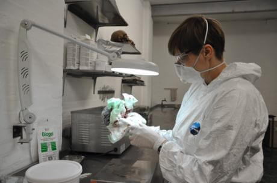

About
The work method of the artist Ajla R. Steinvåg is that of a clinical researcher. To her anatomy, pathology and surgery are not only a sources of aesthetic imagery, but the ideas, processes and techniques that the body undergoes are equally important. Steinvåg works in the prolongation of reality to which she refers and wants to make us aware of the materialistic processes in our body, identity and physical integrity as a part of nature. Instead of the illusion that we can avoid illness, Steinvåg confronts us with the beauty of imperfection, susceptibility, vulnerability and mortality.
De werkmethode van kunstenares Ajla R. Steinvåg is die van een klinisch onderzoeker. Voor haar zijn anatomie, pathologie en chirurgie niet alleen bronnen voor esthetisch beeldmateriaal, maar de ideeën, processen en technieken die het lichaam ondergaan zijn net zo belangrijk. Steinvåg werkt in de verlenging van de realiteit waar zij aan refereert, en wil ons bewust maken van de materialistische processen in ons lichaam, identiteit en lichamelijk integriteit als een deel van de natuur. In plaats van de illusie dat we ziekte kunnen vermijden, confronteert Steinvåg ons met de schoonheid van de onvolkomenheid, de vatbaarheid, de kwetsbaarheid en de sterfelijkheid.
++
Essay geschreven door Omar Muñoz Cremers ter gelegenheid van de tentoonstelling The Machinery of Compensation van Ajla R. Steinvåg in de bibliotheek van het Van Abbemuseum, Eindhoven (17.09.2013—01.11.2013). Download essay hier
De Wetenschap van het Nieuwe Lichaam
1.
Het tijdperk van de conceptuele kunst loopt ten einde. Het digitale beeld als dualistische leugen/waarheid neemt zijn rechtmatige plek in. Maar nu al worden de eerste installaties in musea geplaagd door digitale rot. En velen zullen volgen omdat de software niet meer op de juiste archaïsche computers, onvindbaar of onwerkbaar, kan worden uitgevoerd. Hier raken we het probleem van cyberpunk als belofte van het digitale als een geesteswereld. Wat blijft echter over als het digitale wegvalt? De zwijgende hardware…en het lichaam. Het digitale domein zal doorgroeien en nieuwe esthetica ontwikkelen terwijl het biologische domein in onze digitale dagdromen lijkt te worden vergeten. Toch blijft het lichaam gewoon doorgaan, al is het in zijn meest gereduceerde vorm, als drager van genetisch materiaal. Ons leven wordt voortgestuwd door twee codes: de digitale en genetische code.
2.
De mensheid heeft het gen altijd gemanipuleerd als onderdeel van cultuur, dat wil zeggen sinds het begin van de landbouw. Eerst onbewust, gevoelsmatig, vervolgens met groeiende kennis steeds beter in kaart gebracht, tot de ontwikkeling van de synthetische biologie waarmee niet bestaande levensvormen worden gemodificeerd maar de creatie van nieuwe levensvormen het doel is. De term creatie maakt ons bewust dat we niet louter met een wetenschappelijke praktijk te maken hebben. Zelfs als dat het geval zou zijn, dan vormen zich verlangens, fantasieën en angsten rond zulke praktijken. Een nieuwe mythologie doemt op en daarmee een nieuwe kunst.
3.
Deze kunst kan ons moeilijk compleet overvallen. Na talloze voorzichtige pogingen zal sciencefiction definitief de beeldende kunst betreden. Sciencefiction als methode, wetenschap als fictie vanzelfsprekend, maar ook wetenschap als esthetische praktijk, heeft ontelbare scenario’s verkend. Sommige verkenningen zullen hoogstwaarschijnlijk onvervulbaar blijven (telepathie, reizen met de snelheid van het licht) anderen zijn ingehaald door de tijd (de reis naar de maan) of bleken juist onvoorspelbaar (de populariteit van de mobiele telefoon.) Het begin van de 21ste eeuw lijkt in eerste instantie een tijdperk te zijn dat op teleurstellende wijze geobsedeerd is met het verleden. Niet alleen de kunst is hier door gehypnotiseerd. De bedrijfsmatige grip op onderzoek lijkt fundamentele doorbraken op wetenschappelijk gebied te vertragen. Ondanks deze golfbrekers van de vooruitgang zal de toekomst er onvermijdelijk langs stromen. De mens aan het begin van de 22ste eeuw zal een andere mens zijn dan aan het begin van de 21ste eeuw.
4.
Aan het begin van sciencefiction, aan het begin van de moderniteit, staat Frankenstein en zijn eerste, fictieve, verkenning naar een synthetische biologie. The Modern Prometheus luidt de ondertitel van Shelley’s boek, waarmee slim mythologie en moderniteit wordt verbonden, de ambivalentie van het project van Frankenstein gevangen. Prometheus immers gaf de mens het vuur van de goden. Vuur van technologie, ideeën en ambitie. Vuur ook van vernietiging. Omdat sciencefiction een verhalend genre is geweest blijft deze prometheaanse ambivalentie altijd behouden in plotmechanisme en moraal: elke technologie brengt onverwachte consequenties met zich mee…schaduwen, waanzin, dood. Zelfs het werk van contra-intuïtieve auteurs als David Cronenberg, Shinya Tsukamoto en J.G. Ballard, die een bepaalde schoonheid zien in de technologische transformatie van de mens, wordt gedreven door waanzin waar zelfdestructie nooit ver weg is. Het originele lichaam accepteert vernieuwing zelden zonder slag of stoot, of beter het lichaam kan het vernieuwingsproces lastig kanaliseren. De nieuwe mens zal niet zonder weeën worden geboren.
5.
Niet alleen lichamelijke weeën (het onbehagen van de hallucinerende wapens die James Woods in Videodrome uit zijn buik trekt) als wel sociale weeën. Een nieuwe mens is een andere mens en homo sapiens houdt niet van vreemdelingen. Ongetwijfeld zal een nieuw klassensysteem ontstaan waarbij vooralsnog onduidelijk is wie de ander zal overheersen. Homo sapiens als adel met de oudste rechten? De hybride mens-machines als middenklasse? De lichamelijk superieure synthetische mens als nieuwe slaven? Deze situatie zal hoe dan ook tijdelijk zijn want de nieuwe levensvormen zullen in veel gevallen een noodzakelijke adaptatie vormen om te kunnen overleven in extreme omstandigheden. Niet alleen op een vervuilde aarde maar vooral in de kosmos, tijdens uitputtende reizen en op andere, onbekende werelden, daar waar de mens, in een omgekeerde vorm van panspermia, naar verlangt terug te keren.
6.
Al tweeduizend jaar presenteert kunst een lichamelijk ideaal dat is ontstaan in de sprongen van archaïsche beeldhouwkunst naar klassieke en vervolgens hellenistische beelden. Kubisme leek een breuk met dit ideaal te hebben bewerkstelligt maar zoals alle avant-gardes van de 20ste eeuw is het bedolven onder de golven van beelden zoals spektakel en consumptie continue produceren, waar de cultus van het klassieke lichaam in ere is hersteld. Al zijn dit onmogelijke lichamen, het product van intense discipline, hoogwaardige supplementen en digitale retouchering. De broncode is De Stervende Slaaf van Michelangelo die steeds verder van ons af zou moeten staan. Zijn eerste vervanger kennen we immers al: de replicant Roy Batty in Blade Runner. Hij die “dingen heeft gezien die jullie mensen niet kunnen voorstellen.”
Omar Muñoz Cremers, Amsterdam (2013)
Omar Muñoz Cremers (Amsterdam, 1971) is socioloog en schrijver. Zijn voornaamste interesse is het gebied waar technologie, wetenschap en kunst elkaar ontmoeten.
+ +
Artikel geschreven door Piet van Bragt, The Machinery of Compensation, bibliotheektentoonstelling het Van Abbemuseum, Eindhoven (17.09.2013—01.11.2013). Journaal 65, Kwartaalblad voor leden en donateurs van de vrienden van het Van Abbemuseum download hier
Ajla Steinvåg: dicht bij het lichaam, The Machinery of Compensation
Het meest nabij is het eigen lichaam. Dichterbij jezelf kun je niet komen. De eerste sensaties die je als mens ervaart zijn lichamelijk. Dat blijft je hele leven zo. Ook als we denken dat onze psyche op de voorste rij blijft staan is je eigen lichaam toch primair. Ajla R. Steinvåg ervaart wat de tekortkomingen van het lichaam zijn als ze in haar jeugd met het onvolkomen lichaam in aanraking komt. Mechanica kan behulpzaam zijn. Werktuigen kunnen iemand op allerlei manieren helpen om het dagelijks leven te realiseren.
Een gesprek met Ajla verloopt anders dan normaal. We hebben het nauwelijks over haar kunstenaarschap. We praten en wisselen gedachten uit over het lichamelijk aspect van het leven. Over ideeën hoe leven tot stand komt, hoe het is geworden, en vooral wat de toekomst is. We spreken over een tijd waarin de biologie geconfronteerd wordt met invloeden die onze hersenfuncties in een andere dimensie plaatsen. We praten over Ray Kurzweil, de futuroloog, die het moment van de singulariteit nabij ziet komen, het moment waarop ons lichaam kwalitatief opgewaardeerd wordt door de kunstmatige intelligentie. Het moment waarop de mensheid de grenzen van de biologie zal overschrijden, de singulariteit, of, zoals Ajla zegt: de synthetische biologie. Door het versnelde tempo van de technologie komt deze paradigmashift nabij: de belangrijke verandering in methoden en intellectuele processen die nodig zijn om een taak te volbrengen. Kortom, is het science fiction, of worden ideeën die door de science fiction gegenereerd zijn werkelijkheid?
De foto in de tentoonstelling waarop Ajla met haar werk bezig is zegt veel. Het romantische beeld van de kunstenaar in zijn atelier, omgeven door tubes verf, scheef geplaatste doeken tegen de muur, het languissante model, de plooien van gordijnen en de nog net zichtbare wijnfles is op haar niet van toepassing. We zien een klinisch werkende dame in een laboratorium situatie. Onderzoek, innovatie! Ajla wordt gefascineerd door de procesmatige aspecten van de evolutie. Evolutionaire ontwikkeling is pas mogelijk als tijdens dat proces door het toeval de mutatie ontstaat. Zonder mutatie is er geen evolutionaire proces. Door het toeval, de afwijking, de mutatie in haar werk toe te laten, kan zij het evolutionaire proces als onderwerp behouden. The Machinery of Compensation: onvolkomen processen in een levenscyclus kunnen worden gecompenseerd en gesublimeerd door medische en technologische ingrepen.
In de bibliotheek toont zij haar werk. Voor haar is een bibliotheek een plaats van onderzoek, van studie, van innovatie, wat correleert met het werk van Ajla, die eveneens obsessief bezig is met onderzoek. De gemaltraiteerde schedels en organen in de vitrines zijn daar exponenten van. Het prachtige witte porselein dat zij als basismateriaal gebruik om haar schedels en beenderen te realiseren representeren het analytische karakter van haar werk. De emotie wil zij als kunstenaar uitbannen. De vraag is echter hoe de toeschouwer dat ervaart. Vooral haar gemuteerde orgaanvormen roepen emoties op. Door de klinische benadering en door de omkadering van deze specimen met chirurgische apparatuur, wordt het de toevallige bezoeker niet altijd gemakkelijk gemaakt. De confrontatie met het lichaam en wel met de niet zichtbare maar onontkoombare lichaamsdelen, kan choquerend werken.
Piet van Bragt, Eindhoven (2013)
++
Tekst geschreven door Omar Muñoz Cremers, 0,1 fte kunstenaarsposities, Centrum Beeldende Kunsten, 's-Hertogenbosch (24.05.2012—24.06.2012).
Re-produce
Een tafel met stoel waar nonchalant een laborantenjas is gedrapeerd, de stoel schuin weggeschoven alsof het werk is onderbroken (we willen liever niet denken dat het klaar is). Op het werkblad van staal liggen een aantal operatiegereedschappen, bladen en verschillende placenta (van silicone). Een plastic emmer naast de tafel. Een werkende bureaulamp. Een labkar gevuld met flesjes en houders.
Verwondering en onbehagen. Er is in wezen niets vreemds aan de placenta. En toch weten we bijna allemaal dat er iets mis mee is. Wat gebeurt er met de placenta wanneer we geboren zijn, in dat uur van chaos blijkt het te zijn verdwenen. Een wonderbaarlijk orgaan, welhaast buitenaards met zijn onwerkelijke kleuren en complexe structuur. Dan zijn er de geruchten over gebruik in de cosmetische industrie die we zoals zoveel factoïden van het moderne leven accepteren. De placenta is zonder twijfel een ideaal Steinvågiaans object. Hier is het geplaatst in de context van een medisch laboratorium wat direct vragen doet oproepen die gewoonlijk in de kunst afwezig zijn. Wat is hier aan de hand? Wat werd hier onderbroken? En essentieel: van wie is de placenta? Want een placenta een Steinvågiaans object noemen is het plaatsen in de reeks vergroeiingen van het menselijk lichaam die zij produceert. Herkenbare structuren uit het menselijk lichaam die onderhevig zijn geweest aan mysterieuze krachten. Dat we de lichaamsdelen zien betekent dat de catastrofe al heeft plaatsgevonden. Een tentoonstelling van gruwelen in bepaalde gevallen, de schedel van Synthetic Fractures doet onwillekeurig denken aan de muren van schedels uit de 20ste eeuw. Maar haar werk is net zo vaak vervuld van verwondering. Een verwondering voor dat wat buiten de norm valt, het normale, goed functionerende lichaam, maar ook een toekomstig lichaam, de missinglinks van de toekomst, het lichaam dat zijn limieten aftast.
Omar Muñoz Cremers, Amsterdam (2012)
